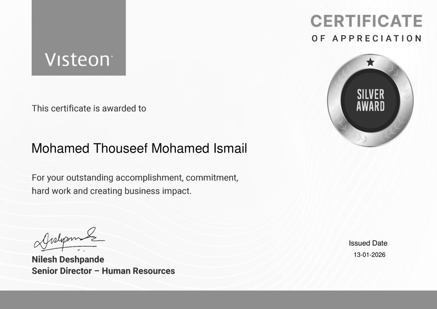
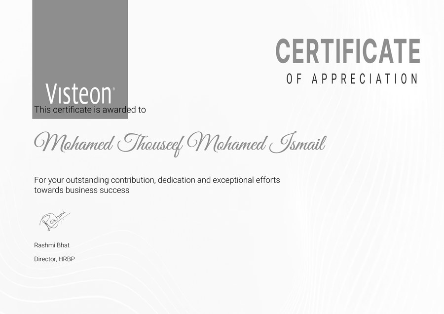

Mohamed Thouseef
I catch the defects that would've reached the road. 4.5 years building the CAN/UDS diagnostics, Python and C automation, and CI/CD pipelines that validate automotive infotainment systems before they ship.
About
Most infotainment bugs don't show up in a demo — they show up three months later, in the cold, on a low battery. Finding those before a vehicle ships is what I do. I design automation frameworks in Python, C, Robot Framework, and Appium, wire them into Jenkins/GitLab CI, and get close to the hardware — CAN, CAN FD, UDS (ISO 14229), SPI, I2C, UART — with CANoe, oscilloscopes, and logic analyzers to run the checks a demo never catches. That work has shipped across three OEM programs and earned three Visteon Silver Awards.
From spec to sign-off
The same five stages run for every program, whether it's a new infotainment ECU or a single diagnostic service.
Skills & tools
Experience
System Validation Engineer II — Test Program & Automation
- Apr 2022Joined via Datamatics Global Services, deployed on-site at Visteon Corporation
- Oct 2023Converted to direct Visteon employment
- Apr 2025Promoted to System Validation Engineer II
- Owned end-to-end functional test program development for automotive infotainment ECUs — defined test strategies, authored test cases, and managed the program release process across OEMs.
- Reduced automated test execution time by 50% across 500+ daily CI/CD builds by designing Python-based test automation frameworks integrated with Jenkins and GitLab.
- Improved CAN/UDS diagnostic fault detection by 25% by developing reusable Python and C automation libraries for protocol validation, root cause analysis, and regression testing.
- Automated Sleep Power Mode and Dark Current measurement validation on the bench, catching 50+ standby power-leakage defects before production sign-off and cutting manual validation effort by 30%.
- Increased defect detection accuracy by 50% with an OCR-based computer vision solution using NI Vision and Tesseract for display validation.
- Built a bench-level Crank Profile Automation Suite using programmable power supplies and oscilloscope-verified voltage profiling to replicate engine-crank transients without a physical vehicle.
- Generated 450+ regression test cases and improved recurring defect coverage by 60% with an AI-assisted test case generation workflow built on historical defect data.
- Delivered on-time validation across multiple infotainment programs by coordinating test strategy, requirement traceability, and defect lifecycle with software, hardware, and systems teams.
Projects
Mahindra XUV700
- Built and maintained automated system-level test suites covering power-mode transitions, boot stability, and core infotainment functions.
- Built an automated power-mode validation pipeline with NI Vision + Tesseract OCR — caught 1,200+ display anomalies at 50% higher detection accuracy, preventing 15 field issues pre-launch.
- Built virtual ECU simulation frameworks for CAN network validation of external ECUs — climate, drive modes, BCM.
TATA Punch
- Built an automated flashing pipeline that cut flash time by 40% and removed 80% of manual steps in high-volume validation.
- Automated Bluetooth, Android Auto, and Apple CarPlay validation across 10+ device variants — 95% coverage, 30% less manual effort.
Skoda Kylaq
- Wrote and ran 200+ automated UDS diagnostic test cases (services 0x10, 0x22, 0x2E, 0x2F, 0x19, 0x31) in C and ProveTech, cutting manual effort by 40%.
- Ran end-of-line diagnostic validation for ISO 14229 compliance — 25% better fault-detection accuracy.
SPI EEPROM & I2C RTC drivers
- Wrote an SPI EEPROM driver with software-controlled chip select and single-byte read/write.
- Integrated a DS1307 RTC over I2C with register-level read/write and BCD time conversion.
- Added interrupt-driven UART logging for system monitoring and debug.
- Verified timing, bus stability, and error handling with a logic analyzer and UART logs.
Awards

